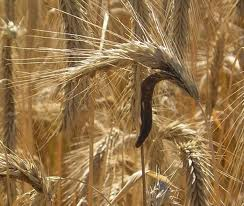

Ergot de Seigle

Ergot de Seigle (Claviceps purpurea de la famille des Pyrénomycètes)
Attention : hautement toxique par ingestion pour le Korat !
Partie toxique pour les chats en général et le Korat en particulier :
Champignon.
Symptômes du processus pathologique :
Vomissements, diarrhées, crampes épileptiques, Les membres deviennent bleu-noir.